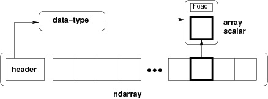

numpy
by sawangpong
Numpy
Numpy เป็น package พื้นฐานที่เตรียมไว้ให้สำหรับรองรับการคำนวนทาง วิทยาศาสตร์ มีคุณสมบัติดังนี้
- เป็น Array object มีขนาด N-dimension array เรียกว่า ndarray และแต่ละ block จะเป็นที่เก็บของ object เป็นชนิด dtype
- มี function ทางวิทยาศสตร์ เตรียมให้ เพื่อให้สามารถคำนวนสมการต่างๆ ได้ทันที เช่น Fourier transforms, linear algebra

install numpy
การติดตั้งมีสามารถติดตั้งได้หลายวิธี แล้วแต่ระบบปฎิบัติการ ubuntu linux scipy.org
sudo apt-get install python3-numpy python3-scipy python3-matplotlib ipython python3-pandas python3-sympy python3-nose
Fedora
sudo dnf install numpy scipy python-matplotlib ipython python-pandas sympy python-nose atlas-devel
ติดตั้งผ่าน pip
sudo pip3 install numpy
ตัวอย่างทดสอบ
import numpy as np
a = np.array([1,2,3])
print(a)
print(type(a))
import numpy as np
a = np.array([1, 2, 3]) # Create a rank 1 array
print(type(a)) # Prints "<class 'numpy.ndarray'>"
print(a.shape) # Prints "(3,)"
print(a[0], a[1], a[2]) # Prints "1 2 3"
a[0] = 5 # Change an element of the array
print(a) # Prints "[5, 2, 3]"
b = np.array([[1,2,3],[4,5,6]]) # Create a rank 2 array
print(b.shape) # Prints "(2, 3)"
print(b[0, 0], b[0, 1], b[1, 0]) # Prints "1 2 4"
คำสั่งในการสร้าง Array
import numpy as np
a = np.zeros((2,2)) # Create an array of all zeros
print(a) # Prints "[[ 0. 0.]
# [ 0. 0.]]"
b = np.ones((1,2)) # Create an array of all ones
print(b) # Prints "[[ 1. 1.]]"
c = np.full((2,2), 7) # Create a constant array
print(c) # Prints "[[ 7. 7.]
# [ 7. 7.]]"
d = np.eye(2) # Create a 2x2 identity matrix
print(d) # Prints "[[ 1. 0.]
# [ 0. 1.]]"
e = np.random.random((2,2)) # Create an array filled with random values
print(e) # Might print "[[ 0.91940167 0.08143941]
# [ 0.68744134 0.87236687]]"